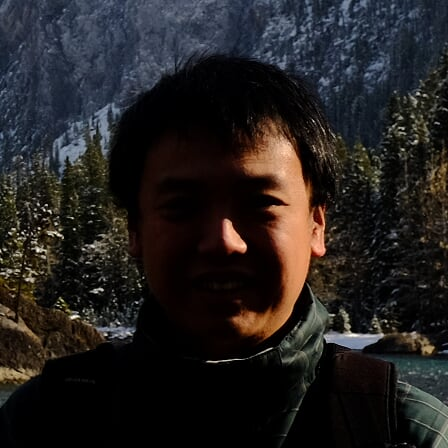

About
Andreas Liudi Mulyo
PhD candidate
Department of Electronic Systems
Norwegian University of Science and Technology (NTNU)
Contact information
 |
andreas.liudi-mulyo"at"ntnu.no |
 |
+47 936 863 70 |
| O. S. Bragstads plass 2a, 7034 Trondheim, Norway |
See my profile in other websites:
Results
All the findings during my PhD period are both published in journal as well as presented in major international conferences/workshops:
- Journal papers
- A. Liudi Mulyo, M. K. Rajpalke, H. Kuroe, P-E. Vullum, H. Weman, B-O. Fimland, K. Kishino, "Vertical GaN nanocolumns grown on graphene intermediated with a thin AlN buffer layer," Nanotechnology, vol. 30 (1), 015604, 2019.
- A. Liudi Mulyo, Y. Konno, J. S. Nilsen, A. T. J. van Helvoort, B-O. Fimland, H. Weman and K. Kishino, "Growth study of self-assembled GaN nanocolumns on silica glass by plasma assisted molecular beam epitaxy," J. Cryst. Growth, vol. 480, 67, 2017.
- Talks/Posters
- I. M. Høiaas, A. Liudi Mulyo, P-E. Vullum, L. Ahtapodov, D. C. Kim, B-O. Fimland, K. Kishino, H. Weman, "Using graphene as substrate and transparent electrode in an GaN/AlGaN nanocolumn flip-chip UV LED," Nanowire Week, Hamilton, Canada, Jun. 11-15 2018. [Oral]
- A. Liudi Mulyo, I. M. Høiaas, M. K. Rajpalke, B-O. Fimland, H. Weman, K. Kishino, "Graphene as a substrate and bottom electrode for high density and vertically aligned GaN nanocolumns," Nano@NTNU Symposium, Trondheim, Norway, Dec. 06-07 2017. [Poster]
- I. M. Høiaas, A. Liudi Mulyo, D. C. Kim, B-O. Fimland, K. Kishino, H. Weman, "AlGaN/GaN nanowire flip-chip UV LED using graphene as substrate and transparent electrode," Nano@NTNU Symposium, Trondheim, Norway, Dec. 06-07 2017. [Oral]
- A. Liudi Mulyo, I. M. Høiaas, D. C. Kim, B-O. Fimland, H. Weman and K. Kishino, "AlGaN/GaN Nanocolumn Flip-Chip UV LEDs Grown on Graphene/Silica Glass," The 11th International Symposium on Semiconductor Light Emitting Devices, Banff, Canada, Oct. 08-12 2017. [Oral]
- I. M. Høiaas, A. Liudi Mulyo, D. C. Kim, B-O. Fimland, K. Kishino, H. Weman, "Graphene as growth substrate and transparent electrode for flip-chip GaN/AlGaN nanocolumn UV-LEDs," The 8th symposium on two-dimensional materials (Carbonhagen 2017), Copenhagen, Denmark, Aug. 16 2017. [Poster]
- A. Liudi Mulyo, B-O. Fimland, H. Weman, K. Kishino, "Epitaxial Growth of Vertical n-type GaN/AlGaN Nanocolumns on Graphene/Silica Glass," The 12th International Conferences on Nitride Semiconductors, Strasbourg, France July 24-28 2017. [Oral]
- A. Liudi Mulyo, A. T. J. van Helvoort, B-O. Fimland, H. Weman, K. Kishino, "Epitaxy Feasibility of n-type GaN/AlGaN Nanocolumns on Silica Glass," The 44th International Symposium on Compound Semiconductors (Compound Semiconductor Week 2017), Berlin, Germany, May 14-18 2017. [Oral]
- A. Liudi Mulyo, Y. Konno, B-O. Fimland, H. Weman, K. Kishino, "Growth of Self-Organized Vertical GaN Nanocolumns Utilizing AlN as Nucleation Sites on Single Layer Graphene/Silica Glass by Molecular Beam Epitaxy," The International Workshop on Nitride Semiconductors, Orlando (Florida), USA, Oct. 02-07 2016. [Oral]
- A. Liudi Mulyo, Y. Konno, B-O. Fimland, H. Weman, K. Kishino, "Self-Organized Vertical GaN Nanocolumns Grown on Silica Glass by RF-Molecular Beam Epitaxy," The 19th International Conference on Molecular Beam Epitaxy, Montpellier, France, Sept. 04-09 2016. [Oral]
- A. Liudi Mulyo, Y. Konno, H. Weman, K. Kishino, "Self-Organized GaN Nanocolumns Grown on Silica Glass by RF-Molecular Beam Epitaxy," The 63rd Japanese Society of Applied Physics, Spring Meeting 2016, Tokyo, Japan, Mar. 19-22 2016. [Oral]
Below are listed the conferences, workshops and symposiums, both in international as well as national scale where our works have been presented, either in oral session (marked with "[Oral]") or poster session (marked with "[Poster]"). In general, I don't provide abstract, presentation slides or poster files in every list. In case if you are interested, just send me an e-mail and I will be happily share them with you.
Activities
Other than doing research, I have been involved as a lab assistant at the following courses:
- TFE4177: Semiconductor Physics with Lab - course info (Spring 2017-2018)
- TFE4575: Physical Methods for Nanostructuring and Characterization, Specialization Course - course info (Autumn 2015, 2017-2018)
- TMT4515: Chemical Methods for Synthesis and Characterization of Nanomaterial, Specialization Course - course info (Autumn 2017-2018)
- TFE4180: Semiconductor Manufacturing Technology - course info (Spring 2015)
Others
Prior to my PhD education, I wrote theses for my master and bachelor degree:
- Andreas Liudi Mulyo, "Characterisation of quantum dot-intermediate band solar cells with optical spectroscopy," Institutt for Fysikk, NTNU, 2013 (Master thesis). Read more
- Andreas Liudi Mulyo, "Identification of the intrinsic spectrum star using line spread function Deep Space Spectrograph-7 in Bosscha observatory, Bandung Institute of Technology," Department of Engineering Physics, Sepuluh November Institute of Technology, 2010 (Bachelor thesis). Read more (available only in Indonesian)